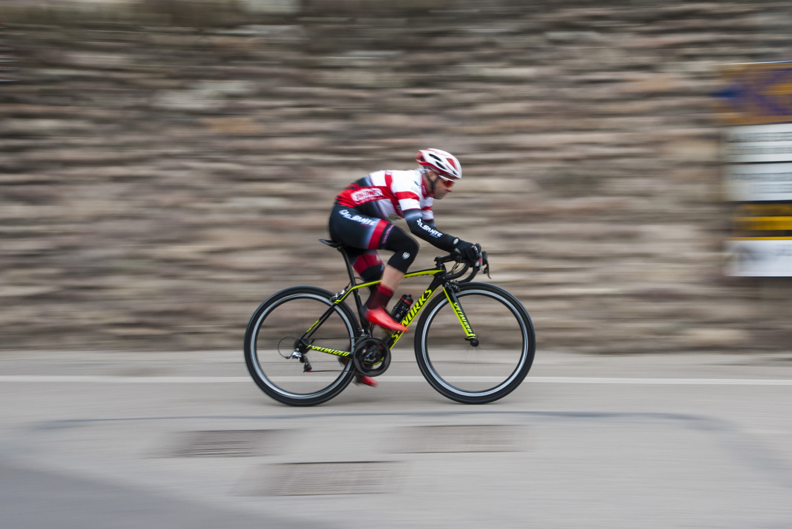

.p{
@include float-left;
}

I am a person who is positive about every aspect of life. There are many things I like to do, to see, and to experience. I like to read, I like to write; I like to think, I like to dream; I like to talk, I like to listen. I like to see the sunrise in the morning, I like to see the moonlight at night; I like to feel the music flowing on my face, I like to smell the wind coming from the ocean. I like to look at the clouds in the sky with a blank mind, I like to do thought experiment when I cannot sleep in the middle of the night. I like flowers in spring, rain in summer, leaves in autumn, and snow in winter. I like to sleep early, I like to get up late; I like to be alone, I like to be surrounded by people.
I like country’s peace, I like metropolis’ noise; I like the beautiful west lake in Hangzhou, I like the flat cornfield in Champaign. I like delicious food and comfortable shoes; I like good books and romantic movies. I like the land and the nature, I like people. And, I like to laugh.
I always wanted to be a great writer, like Victor Hugo who wrote Les Miserable, or like Roman Roland who wrote John Christopher. They have influenced millions of people through their books. I also wanted to be a great psychologist, like William James or Sigmund Freud, who could read people’s mind. Of course, I am nowhere close to these people, yet. I am just someone who does some teaching, some research, and some writing. But my dream is still alive.